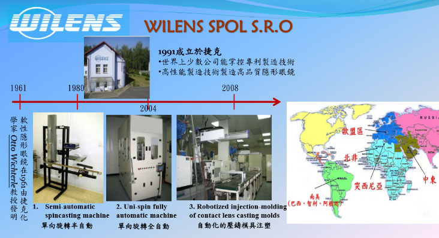
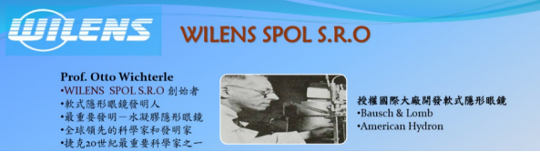

关于Bio Thin TM

1. Wilens：由Otto Wicherle创办，致力于隐形眼镜、人工晶体的研发、生产及销售。

2. Otto Wicherle：捷克科学家， Wilens公司的创始人。20世纪50年代他发现了一种聚合物HEMA（甲基丙烯酸羟乙酯），至今仍然作为隐形眼镜的主材。1961年首先发明了一种旋转成形技术制造软镜。被誉为软性隐形眼镜之父。


3. Bio Thin TM 独特的非球面连续渐进的镜片设计，最大周边离焦， 已获多项专利，承袭捷克工艺，精益求精。